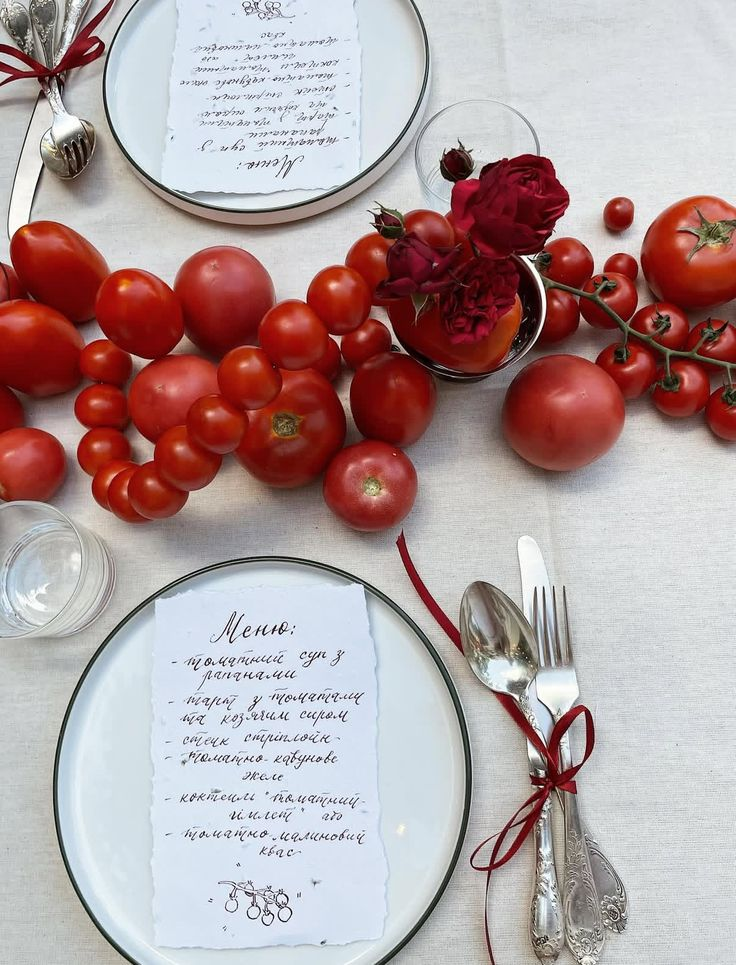
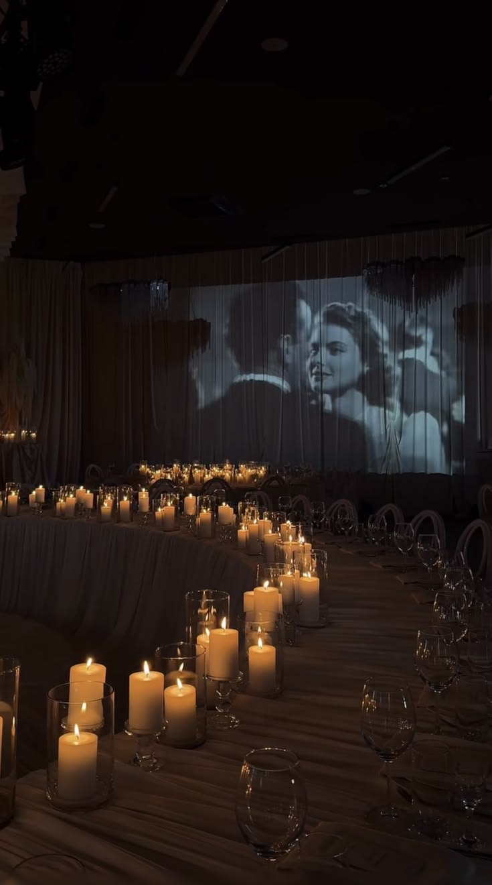
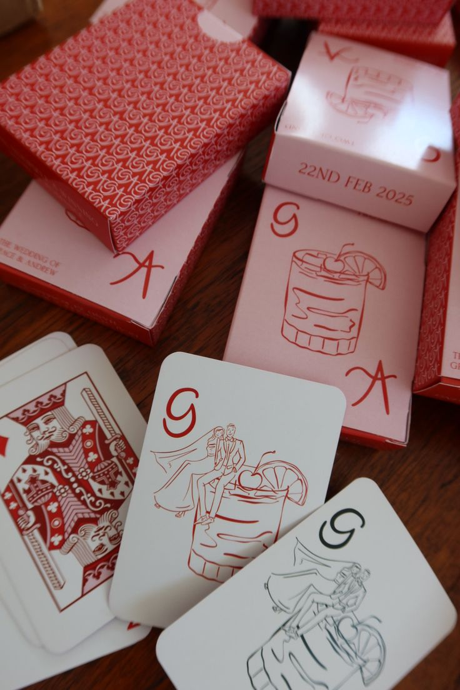
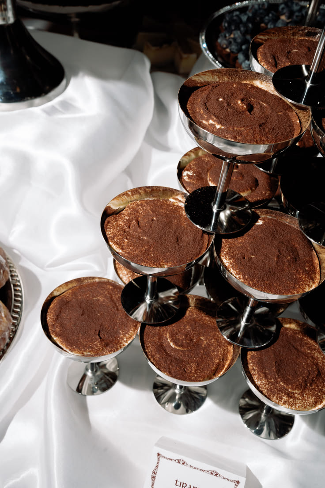

Large drapes behind the couple
Behind the top table, and why not across a whole wall: large, flowing fabric drapes that fall all the way to the floor. Linen, voile, muslin, in cream or sand tones.
Why it works: a drape turns any room, even the plainest, into a set. And in photos it is pure magic: the light glides over it, the candles reflect, everything softens. It is the decor investment that pays back most in pictures.
No flowers. Fruit and vegetables.

On the tables, no flowers. Instead: vegetables, fruit, herbs, moss. Artichokes, figs, bunches of grapes, lemons, cabbages, bundles of radishes, rosemary spilling over.
It is graphic, generous, seasonal, and it changes the mood instantly: you go from classic wedding to the long, abundant table everyone wants to photograph. Bonus: nothing goes in the bin, it all gets eaten or shared out the next day.
A black-and-white film during the evening

During the evening, we project a black-and-white film onto a wall or a big screen. A classic, sound off, just for the image.
Or even better: black-and-white photos of the couple as children, projected on the walls. Guests stop, work out who is who, laugh. It is emotion without the speeches, and it dresses the room better than any decor.
Anything that can be personalised, will be

Playing cards, matchboxes, coasters, bottle labels: anything that can be personalised will be. Your names, the date, a little drawing, a line that sounds like you.
These details cost little, give the party a real identity, and guests keep them. A matchbox with your initials still turns up in a drawer three years later.
No tiered cake

And the tiered cake? No, no, no. A tiramisu for everyone, in its own stainless steel coupe.
It is chic, it is indulgent, it is easy to serve to 150 people, and it makes superb photos when all the coupes land on the tables at once. We think this is the one you will really want to steal from us.
Frequently asked questions
What can replace flowers on wedding tables?
Fruit, vegetables, fresh herbs and moss: artichokes, figs, grapes, lemons, cabbages, radishes, sprigs of rosemary. It is graphic, seasonal, often cheaper than cut flowers, and it can be eaten or given away after the party.
What are some original wedding ideas?
Large fabric drapes behind the top table, a black-and-white film or childhood photos projected during the evening, personalised objects (playing cards, matchboxes) and an individual dessert instead of the tiered cake, such as tiramisu in a coupe.
What can replace the wedding cake?
An individual dessert served to every guest: tiramisu in a coupe, panna cotta, chocolate mousse in a glass. It is easier to serve, more photogenic, and everyone gets the same portion.